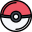

<ion-toolbar color="primary">
  <ion-buttons slot="secondary">
    <ion-button (click)="goHome()">
      
    </ion-button>
  </ion-buttons>
  <ion-buttons slot="primary">
    <ion-button color="secondary" (click)="goShoppingCart()" routerLink="/shopping-cart">
      <ion-icon slot="icon-only" name="cart-outline"></ion-icon>
    </ion-button>
  </ion-buttons>
  <ion-title>PokeTienda</ion-title>
</ion-toolbar>